本文对数据库操作中的事务以及事务的隔离级别进行详细介绍。
本文实验的测试环境: Windows10+cmd+MySQL5.6.36+InnoDB
一、事务的四个特性（ACID）
原子性（Atomicity）：
事务开始后所有操作，要么全部做完，要么全部不做，不可能停滞在中间环节。事务执行过程中出错，会回滚到事务开始前的状态，所有的操作就像没有发生一样。也就是说事务是一个不可分割的整体，就像化学中学过的原子，是物质构成的基本单位。一致性（Consistency）：
事务开始前和结束后，数据库的完整性约束没有被破坏 。比如A向B转账，不可能A扣了钱，B却没收到。隔离性（Isolation）：
同一时间，只允许一个事务请求同一数据，不同的事务之间彼此没有任何干扰。比如A正在从一张银行卡中取钱，在A取钱的过程结束前，B不能向这张卡转账。持久性（Durability）：
事务完成后，事务对数据库的所有更新将被保存到数据库，不能回滚。
二、事务的并发问题
脏读：
事务A读取了事务B更新的数据，然后B回滚操作，那么A读取到的数据是脏数据。不可重复读：
事务 A 多次读取同一数据，事务 B 在事务A多次读取的过程中，对数据作了更新并提交，导致事务A多次读取同一数据时，结果不一致。幻读：
系统管理员A将数据库中所有学生的成绩从具体分数改为ABCDE等级，但是系统管理员B就在这个时候插入了一条具体分数的记录，当系统管理员A改结束后发现还有一条记录没有改过来，就好像发生了幻觉一样，这就叫幻读。
小结**：不可重复读的和幻读很容易混淆，不可重复读侧重于修改，幻读侧重于新增或删除。解决不可重复读的问题只需锁住满足条件的行，解决幻读需要锁表。
三、MySQL事务隔离级别
| 事务隔离级别 | 脏读 | 不可重复读 | 幻读 |
|---|---|---|---|
| 读未提交（read-uncommitted） | 是 | 是 | 是 |
| 读已提交（read-committed） | 否 | 是 | 是 |
| 可重复读（repeatable-read） | 否 | 否 | 是 |
| 串行化（serializable） | 否 | 否 | 否 |
mysql默认的事务隔离级别是可重复读
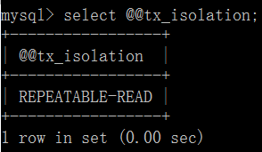
四、用例子说明各个隔离级别的情况
读未提交
（1）打开一个客户端A，并设置当前事务模式为read uncommitted（未提交读），查询表account的初始值：
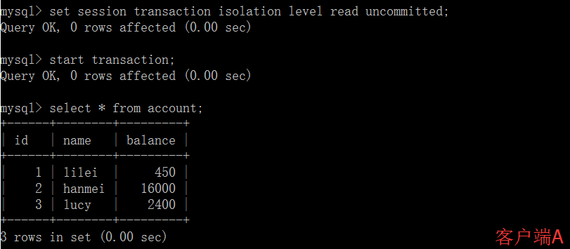
（2）在客户端A的事务提交之前，打开另一个客户端B，更新表account：
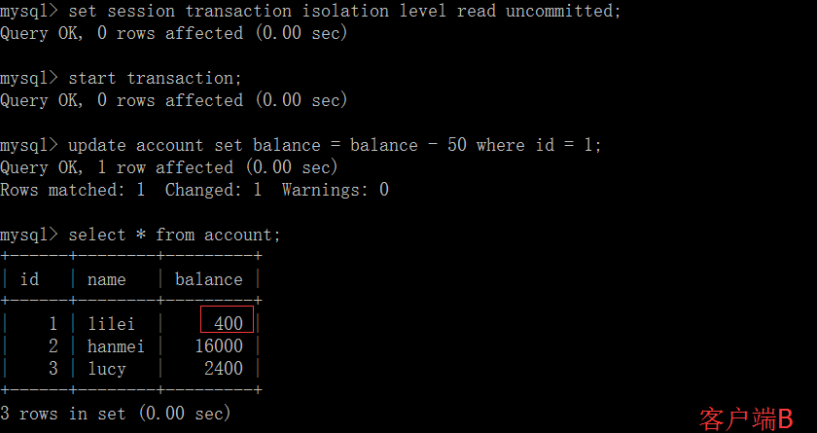
（3）这时，虽然客户端B的事务还没提交，但是客户端A就可以查询到B已经更新的数据：
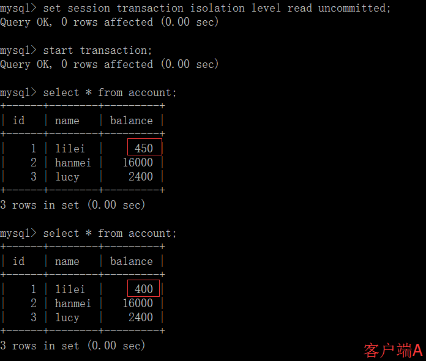
（4）一旦客户端B的事务因为某种原因回滚，所有的操作都将会被撤销，那客户端A查询到的数据其实就是脏数据：
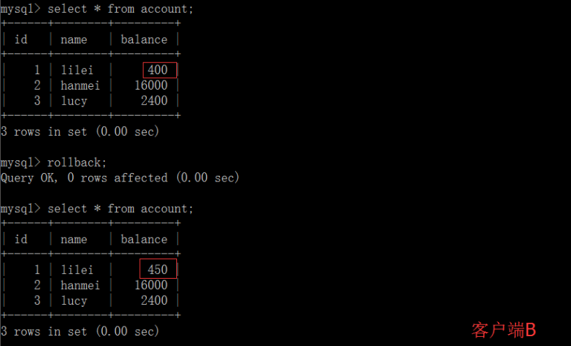
（5）在客户端A执行更新语句update account set balance = balance - 50 where id =1，lilei的balance没有变成350，居然是400，是不是很奇怪，数据不一致啊，如果你这么想就太天真了，在应用程序中，我们会用400-50=350，并不知道其他会话回滚了，要想解决这个问题可以采用读已提交的隔离级别
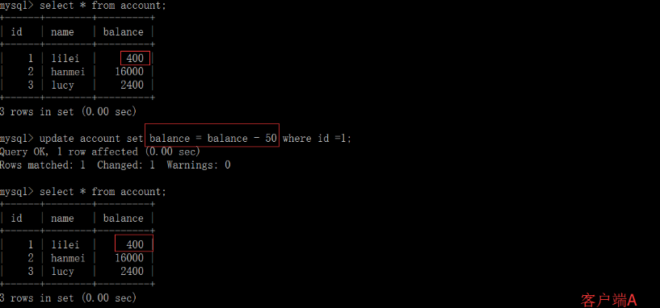读已提交
（1）打开一个客户端A，并设置当前事务模式为read committed（读已提交），查询表account的所有记录：
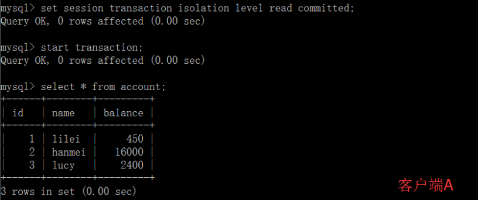
（2）在客户端A的事务提交之前，打开另一个客户端B，更新表account：
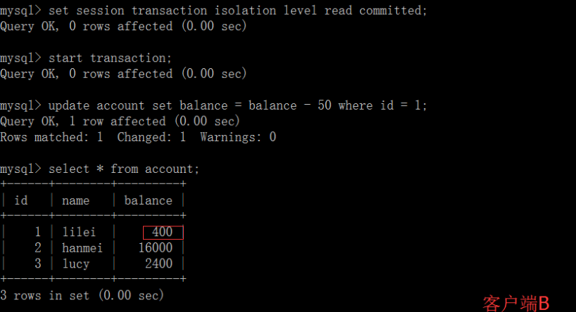
（3）这时，客户端B的事务还没提交，客户端A不能查询到B已经更新的数据，解决了脏读问题：
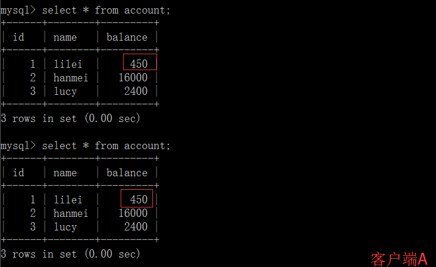
（4）客户端B的事务提交
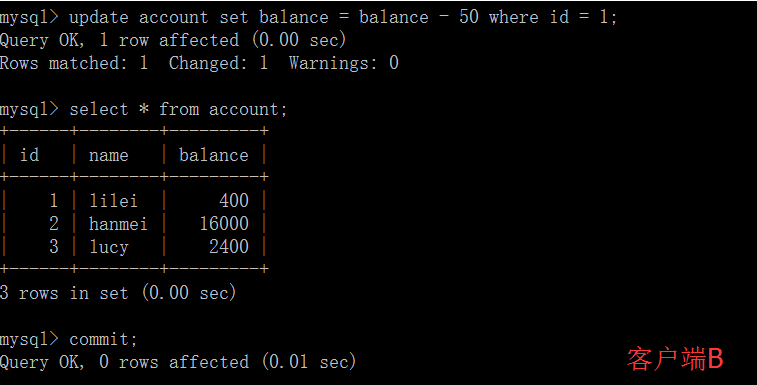
（5）客户端A执行与上一步相同的查询，结果 与上一步不一致，即产生了不可重复读的问题
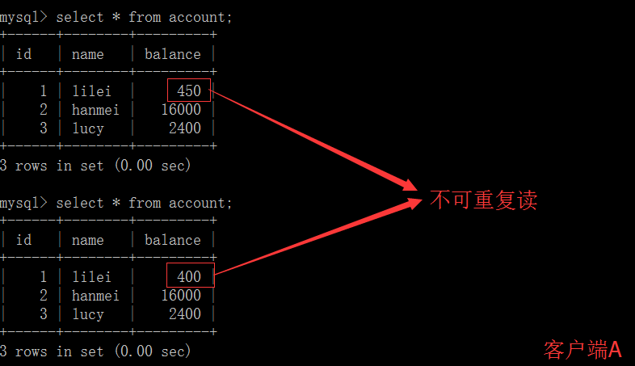可重复读
（1）打开一个客户端A，并设置当前事务模式为可重复读(repeatable read)，查询表account的所有记录
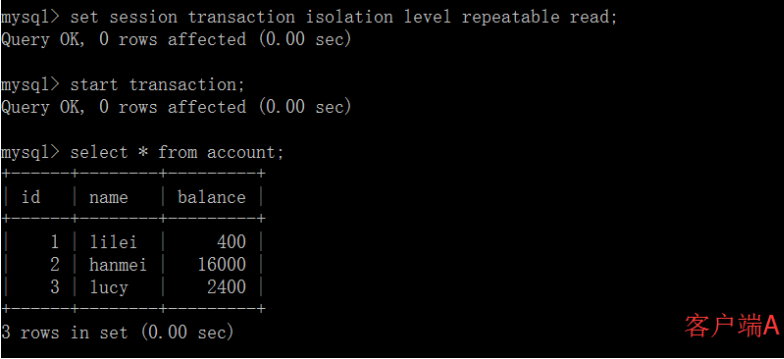
（2）在客户端A的事务提交之前，打开另一个客户端B，更新表account并提交
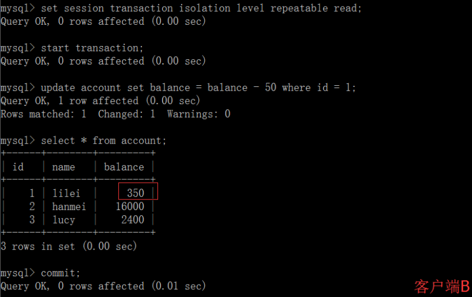
（3）在客户端A查询表account的所有记录，与步骤（1）查询结果一致，没有出现不可重复读的问题
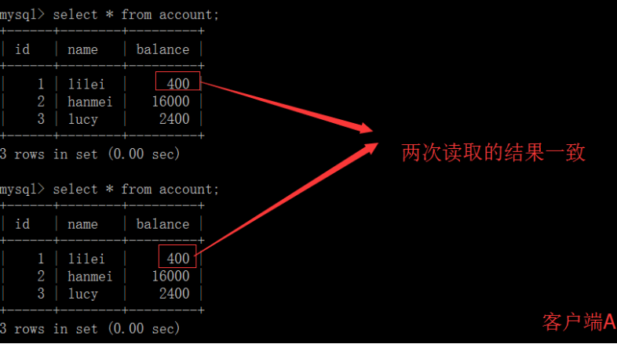
（4）在客户端A，接着执行update balance = balance - 50 where id = 1，balance没有变成400-50=350，balance值用的是步骤（2）中的350来算的，所以是300，数据的一致性倒是没有被破坏。可重复读的隔离级别下使用了MVCC机制，select操作不会更新版本号，是快照读（历史版本）；insert、update和delete会更新版本号，是当前读（当前版本）。
（5）重新打开客户端B，插入一条新数据后提交
(6）在客户端A查询表account的所有记录，没有查出新增数据，所以没有出现幻读
串行化
（1）打开一个客户端A，并设置当前事务模式为serializable，查询表account的初始值：
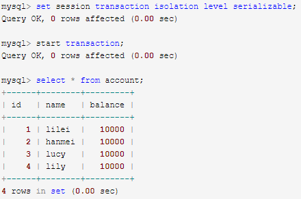
（2）打开一个客户端B，并设置当前事务模式为可串行化(serializable)，插入一条记录报错，表被锁了插入失败（因为客户端A的事务还未提交），mysql中事务隔离级别为serializable时会锁表，因此不会出现幻读的情况，这种隔离级别并发性极低，开发中很少会用到。
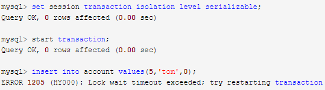